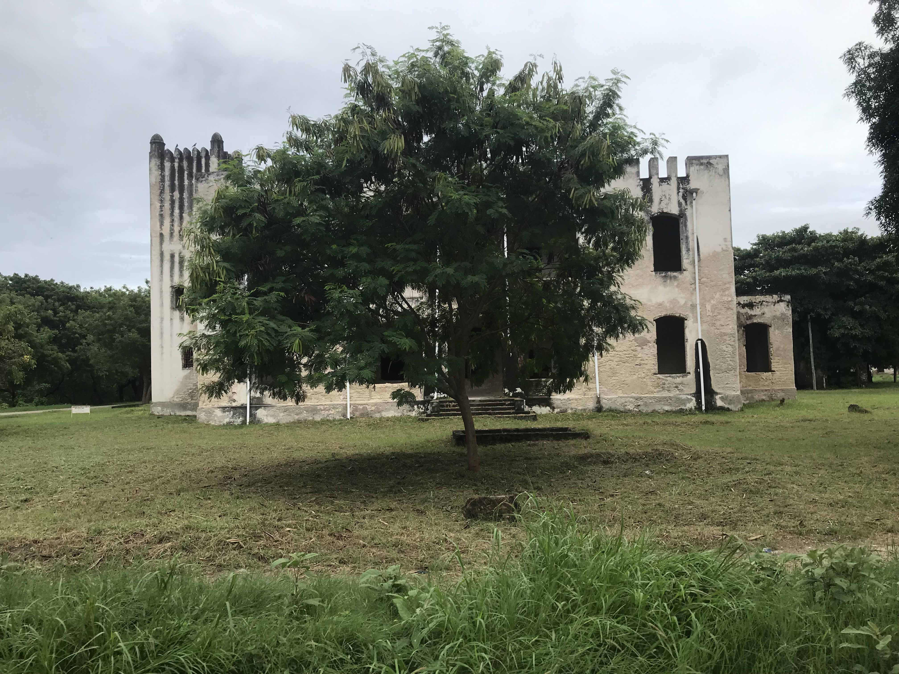

Inner City of Dar Es SalaamA man in the inner city of Dar es salaam, sleepingA view a clothes shop in Dar es SalaamView of Shops along the streets of Dar Es Salaam
Means of Transportation
"Dala Dala" means "500 500", the cost of transportation with public buses."Boda boda" or "Motorcycle" is a very common means of transportationA school bus and on the backside others have the chance to contact a phone number to
evaluate the drivingCommon ways to transport goods: by car or "boda boda"A view of a hospital in Dar es SalaamHere you can see a gym along the streets, easily accessible
Welcome to Bagamoyo
Slave Museum "Caravan Serai"A sculpture of a slave carrying a tusk"Freibrief" was a confirmation of german authority which stated a slave was free.
A similiar similiar confirmation was given by the arabs to free slaves
Bagamoyo German Architecture
View of the Sign for the German BomaView of the German Bomo

Bagamoyo Fishmarket
A great deal many fish!And other kinds as well!The Indian Ocean!